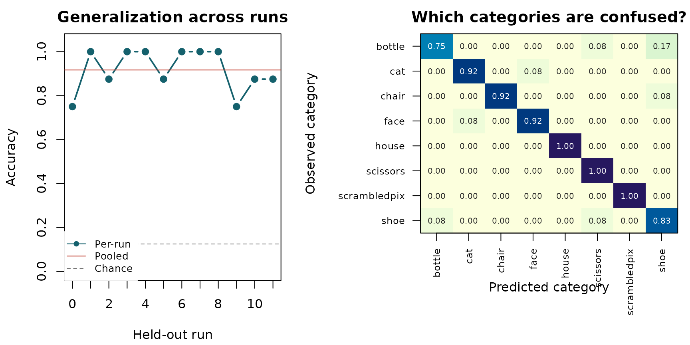

Can a distributed fMRI pattern identify what a person is viewing in a run the model has never seen? This guide answers that question with Subject 1 from Haxby et al. (2001): 96 ventral-temporal patterns, eight visual categories, and 12 scanning runs. We will hold out one entire run at a time, fit a classifier on the other 11, and collect 96 genuinely out-of-sample predictions.
By the end, you will have a checked analysis specification, a cross-validated accuracy estimate, and a confusion matrix that shows where the classifier succeeds and fails. The example is small enough to run during package checks, but the objects and analysis engine are the same ones used for atlas regions and whole-brain searchlights.
Scientific scope. This is a within-subject demonstration of generalization across runs. It is not evidence about new participants, and its accuracy is not a population-level inferential test.
What data are we decoding?
The package ships a compact derivative of the public Haxby dataset.
Each row is the mean activation pattern for one category in one run;
each column is a voxel in the published ventral-temporal (VT) mask. The
raw BOLD time series have already been reduced to analysis-ready
patterns, so no download is needed. This is a reanalysis of that
derivative, not a literal reproduction of Haxby et al.’s original
classifier and validation procedure. The derivative was built from the
PyMVPA
Subject 1 tutorial archive; data-raw/haxby2001_subj1.R
is the complete rebuild script, and
inst/extdata/haxby2001_subj1/README.md records the contents
and redistribution note. The SHA-256 digest of the analyzed
patterns.rds file is
0d2c8cd36ec955a31e201b10efeae6c4a478da6dcc1f5bf05af0c9ef22c21706.
bundle <- readRDS(resolve_haxby_path())
data_overview <- data.frame(
patterns = nrow(bundle$patterns),
voxels = ncol(bundle$patterns),
categories = length(unique(bundle$category)),
runs = length(unique(bundle$run))
)
knitr::kable(data_overview, caption = "The bundled Haxby derivative.")| patterns | voxels | categories | runs |
|---|---|---|---|
| 96 | 577 | 8 | 12 |
The design is balanced: every run contributes one pattern for each of
the eight categories. That matters because the nominal accuracy expected
from uniform guessing is 1 / 8 = 12.5%.
In your own study, these rows would usually be trial-wise or
condition-wise beta estimates from a first-level model. See
vignette("Constructing_Datasets") for file-backed images,
masks, and other input layouts.
What must remain independent?
Measurements from the same fMRI run share drift, motion, and temporal noise. A random row-wise split can therefore put correlated observations on both sides of the train/test boundary and exaggerate performance. Our estimand is instead explicit:
How accurately can a model trained on 11 runs classify the eight category patterns in the twelfth run?
We encode the category as the response, the run as the blocking variable, and use leave-one-run-out cross-validation.
design_table <- data.frame(
category = factor(bundle$category),
run = bundle$run
)
design <- mvpa_design(
design_table,
y_train = ~ category,
block_var = ~ run
)
crossval <- blocked_cross_validation(bundle$run)There are 12 folds. In each fold, 88 patterns train the model and the eight patterns from one untouched run test it. Every category appears once in every test fold.
How does rMVPA represent the analysis?
An rMVPA workflow has four scientific objects. Keeping them separate makes the analysis auditable: the imaging measurements live in a dataset, the response and grouping variables live in a design, the estimator and resampling rule live in a model specification, and an engine decides where to fit it.
| Question | Object in this analysis |
|---|---|
| What are the measurements? | An mvpa_dataset with 96 VT patterns |
| What is predicted, and what defines independence? | An mvpa_design with category and run |
| What is fitted and resampled? | An mvpa_model with blocked CV |
| Where is it fitted? | One labelled VT region passed to
run_regional()
|
The bundle stores a matrix plus spatial metadata. The next chunk
back-projects the voxel columns into a 4-D sparse neuroimaging object.
With your own data, neuroim2::read_vec() and
neuroim2::read_vol() usually provide these objects
directly.
mask_array <- array(0L, bundle$mask_dim)
mask_array[bundle$mask_idx] <- 1L
vt_mask <- LogicalNeuroVol(mask_array, bundle$mask_space)
voxel_by_pattern <- t(bundle$patterns)
storage.mode(voxel_by_pattern) <- "double"
vector_space <- neuroim2::add_dim(bundle$mask_space, ncol(voxel_by_pattern))
bold_patterns <- SparseNeuroVec(
voxel_by_pattern,
space = vector_space,
mask = as.logical(mask_array)
)
vt_region <- NeuroVol(mask_array, bundle$mask_space)
dataset <- mvpa_dataset(bold_patterns, mask = vt_mask)
model <- mvpa_model(
model = load_model("sda_notune"),
dataset = dataset,
design = design,
crossval = crossval,
return_predictions = TRUE
)sda_notune is shrinkage discriminant analysis with no
hyperparameter search. It is a strong default when the number of
correlated voxels is large relative to the number of observations. The
estimator is refitted from scratch inside each training fold; the
held-out run is used only for prediction. This model requires the
suggested CRAN package sda; install that optional
dependency before running the vignette if it is not already
available.
Can we catch a bad design before fitting?
validate_analysis() checks the specification for common
failures such as a cross-validation rule that ignores run structure,
missing classes in a fold, or test folds that are too small.
preflight <- validate_analysis(model, verbose = FALSE)
preflight_summary <- data.frame(
passed = preflight$n_pass,
warnings = preflight$n_warn,
failures = preflight$n_fail
)
knitr::kable(preflight_summary, caption = "Static checks before model fitting.")| passed | warnings | failures |
|---|---|---|
| 6 | 0 | 0 |
A clean preflight is necessary, not magical. It can verify the design
and fold structure represented in these objects; it cannot prove that
upstream preprocessing was scientifically appropriate. Any data-driven
scaling, feature selection, or tuning must also be learned without
looking at the test observations.
vignette("FeatureSelection") shows how to place feature
selection inside the resampling loop.
What does the held-out analysis find?
The VT mask contains one non-zero region, so
run_regional() fits the model once per fold in that region
and then pools the held-out predictions. Setting
preflight = "error" prevents execution if a methodological
check fails.
result <- run_regional(
model,
region_mask = vt_region,
preflight = "error",
verbose = FALSE
)result$performance_table contains region-level metrics;
result$prediction_table contains one row per held-out
prediction. Accuracy is the most transparent primary measure for this
balanced eight-way problem.
predictions <- as.data.frame(result$prediction_table)
accuracy <- result$performance_table$Accuracy[[1]]
auc_centered <- result$performance_table$AUC[[1]]
chance <- 1 / length(unique(design_table$category))
result_summary <- data.frame(
held_out_predictions = nrow(predictions),
correct = sum(predictions$correct),
accuracy = sprintf("%.1f%%", 100 * accuracy),
chance_accuracy = sprintf("%.1f%%", 100 * chance),
accuracy_above_chance = sprintf("%.1f points", 100 * (accuracy - chance)),
chance_centered_AUC = sprintf("%.3f", auc_centered)
)
knitr::kable(result_summary, caption = "Performance pooled across 12 held-out runs.")| held_out_predictions | correct | accuracy | chance_accuracy | accuracy_above_chance | chance_centered_AUC |
|---|---|---|---|---|---|
| 96 | 88 | 91.7% | 12.5% | 79.2 points | 0.973 |
The model correctly classifies 88 of 96 patterns: 91.7% accuracy, compared with 12.5% under uniform guessing. The result supports the narrow claim that category information in this subject’s VT patterns generalizes across runs.
rMVPA reports multiclass AUC as the mean one-versus-rest AUC
transformed to 2 * raw AUC - 1. Its range is therefore -1
to 1, with 0 as the chance reference and 1 as perfect ranking. It is not
raw AUC and it is not AUC - 0.5.

Held-out performance by test run (left) and the row-normalized confusion matrix (right). The dashed line is eight-way chance accuracy; the solid line is pooled accuracy. Every plotted value comes from a prediction made while that observation’s run was held out.
All 12 folds exceed chance, so the pooled result is not carried by a single run. The confusion matrix also prevents a high average from hiding a failed category: accuracy ranges from 75.0% for bottle to 100.0%. Face and house patterns are classified at 91.7% and 100.0%, respectively.
These diagnostics describe prediction, not mechanism. A classifier can use a distributed signal without identifying a unique set of causally responsible voxels, and a high score in one participant does not establish a group effect.
How do you adapt this workflow?
The scientific contract stays fixed while the spatial question changes:
- Build an
mvpa_datasetwhose observations align exactly with the design. - Put the response and the independence unit in an
mvpa_design. - Choose cross-validation that respects that unit.
- Validate the specification before fitting.
- Inspect fold-level and class-level behavior, not only a pooled score.
| This example uses | Replace it with |
|---|---|
| Block-mean VT patterns | Trial-wise or condition-wise patterns from your first-level model |
category |
The outcome your model should predict |
run |
The acquisition or grouping unit that must not cross a fold boundary |
| The published VT mask | A region defined independently of the held-out outcomes |
sda_notune |
A classifier chosen before final evaluation, with any tuning nested inside CV |
For several atlas regions, supply an integer-labelled region mask to
run_regional(). For a local decoding map, the same model
specification can be sent to the searchlight engine:
searchlight_result <- run_searchlight(
model,
radius = 4,
preflight = "error"
)A searchlight changes the spatial estimand from “does this predefined
region carry information?” to “where do local neighbourhoods carry
information?” It also introduces many spatial comparisons and
substantially more computation;
vignette("Searchlight_Analysis") treats those choices
directly.
To save the regional tables and a reproducibility manifest:
save_results(result, dir = "haxby-vt-results")Where should you go next?
-
Bring your own images and masks:
vignette("Constructing_Datasets"). -
Design leakage-resistant resampling:
vignette("CrossValidation"). -
Select voxels inside the training folds:
vignette("FeatureSelection"). -
Move from one region to a decoding map:
vignette("Searchlight_Analysis"). -
Study representational geometry instead of category
prediction:
vignette("RSA"), followed byvignette("Kriegeskorte_92_Images")for a real-data example.
The package’s core public workflow is now in view:
mvpa_dataset + mvpa_design + cross-validation
|
v
mvpa_model
|
+---------+----------+
| |
run_regional() run_searchlight()
| |
+---------+----------+
v
checked predictions, metrics, and mapsReferences
Haxby JV, Gobbini MI, Furey ML, Ishai A, Schouten JL, Pietrini P (2001). Distributed and overlapping representations of faces and objects in ventral temporal cortex. Science, 293, 2425–2430. doi:10.1126/science.1063736.
Varoquaux G, Raamana PR, Engemann DA, Hoyos-Idrobo A, Schwartz Y, Thirion B (2017). Assessing and tuning brain decoders: cross-validation, caveats, and guidelines. NeuroImage, 145, 166–179. doi:10.1016/j.neuroimage.2016.10.038.